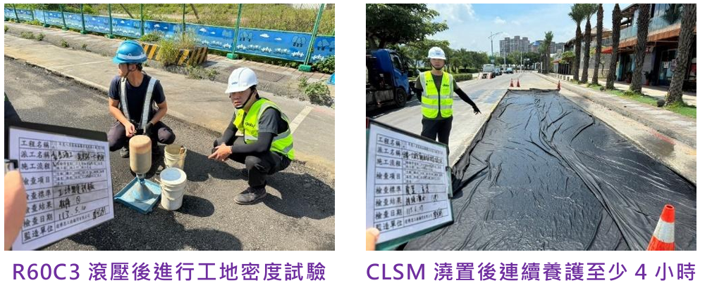
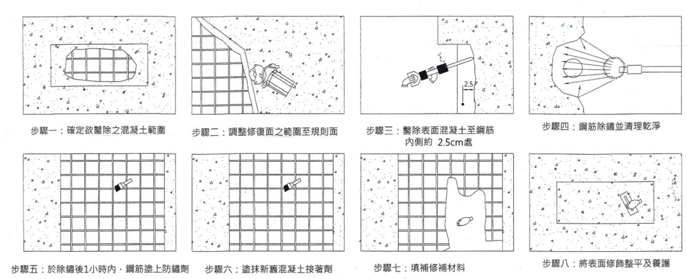

.png)
國內道路鋪築厚度的設計方法主要參考美國規範，包含AI(美國瀝青學會)簡易設計方法及美國加州設計方法，分別摘述如下：
係分別考量道路之交通量、成長率、貨車因子、胎壓因子等，進行設計當量軸次(80KN ESAL)之計算，決定交通量級別後，再輔以路基土壤強度之分類，最後經由查表即可決定道路之鋪築結構厚度組成。
本方法同樣需進行設計當量軸次(80KN ESAL)之計算後，再換算為交通量指數(TI)
當鋪面層經過反覆之修補，卻仍持續損壞開裂時，即須思考是否因回填層不良所導致，而須進行路基改良。改良厚度可遵循前述設計方式計算，目前常用之路基改良工法包含有冷拌瀝青(R60C3)、乾拌水泥及低強度回填材料(CLSM)等
在永續提升人行安全計畫的政策推動下，過去我們避免限縮既有車道寬度的設計觀念或用路習慣，現在已必須與時俱進調整為「最小車道寬度、最大行人空間」的人本設計原則。有關人行道的設計重點摘述如下：
路口行人停等區應儘量擴大以保護行人，並得以欄杆或綠帶進行實體保護，必要時可以縮減車道寬度的方式調整(仍須達規範最小車道寬度)，以縮短行穿線距離，行穿線應自路口邊緣線退縮3~5公尺。 車輛轉向軌跡模擬可協助合理規劃轉彎圓弧段，另外如果屬於大型車輛轉向之路口，則可採用三心圓複曲線進行模擬，以使車行軌跡更加貼合路口圓弧。
1. 人行道淨寬以2.5 公尺以上為宜，一般情況不得小於1.5 公尺。如受限於道路現況，經該管主管機關同意者，其淨寬不得小於0.9 公尺。
2. 人行道上方淨高以2.1 公尺以上為宜，且於通道側邊高度0.6 公尺至2.1 公尺間不得有0.1 公尺之懸空凸出物。
3. 人行道高於相鄰地面20公分至75公分時，應於該側邊緣設置高度5公分以上之防護緣；超過相鄰地面75公分時，應加設安全護欄或護牆，高度不得小於110公分。
4.路緣斜坡之坡度宜小於8.33%(1:12)；高低差20公分以下者，其坡度得酌予放寬。橫坡度最小0.5％，最大5％。
5. 利用地面鋪材提供整齊邊界線取代導盲磚時，其顏色、材質、觸感或敲擊聲必須與相鄰地面呈現明顯差異或對比，足供視障者辨識。
人行道為線性結構，因此重複性的構造如格柵、化妝蓋板、樹穴等之齊平以及磚面之整磚對縫等相對重要，亦為完成後是否美觀的關鍵因素

部份橋梁興建年代偏早，可能因地震或保護層厚度不足導致水分入侵而出現裂縫、混凝土層剝落，或鋼筋膨脹銹蝕等問題。橋梁巡檢作業，除人員進行目視巡檢外，必要時須出動無人機協助巡檢。
一般橋梁巡檢仍以人員接觸或目視判斷為主，但是對於人員不易到達或目視不及之死角，則可運用無人機(UAV)協助。設計測量用的專業級無人機可搭載高精度儀器和攝影鏡頭，同時可運用攝影測量技術，量測裂縫寬度或建立3D點雲模型的基礎資料。
裂縫及鋼筋銹蝕修補的過程可參照以下8個步驟進行，而在設計上需注意的重點，則是搭配結構計算決定鋼筋是否必須更換。另亦可採用碳纖維布等複合材料，強化修補效果，提升橋梁耐久性。
河道環境整理則為主要之施工項目，經由定期適當的整理、除草，可使水流更加順暢，避免洪氾，同時亦可使居家環境更加整潔。
進行新設排水渠道或既有渠道改善時，須先進行水理分析以決定斷面尺寸。以市區排水而言，可依據市區道路及附屬工程設計規範辦理，相關設計重點摘述如下：
依據內政部國土管理署「雨水下水道清疏作業規範」規定，雨水下水道經檢查作業發現有淤積現象者，應即依順序辦理清疏作業，並於汛期前完成為原則。

老舊的雨水箱涵受水份侵蝕或保護層不足，容易失去耐久性，造成鋼筋吸水膨脹銹蝕，擠壓混凝土層剝落而形成惡性循環

配合路平專案執行人孔下地，或雨水下水道圖資更新需要時，可利用精度達公分等級的 e-GNSS 即時動態衛星定位儀進行人孔現場快速定位，再將 資料建置於 GIS 系統中，以使資料有效保存，避免人員交替造成遺失的困擾。

坡土石滑動是可能的災害型式，依不同規模的土石崩落情形，可分別評估採用貼地式防護網、擋土牆或地錨等保護工法。
透水性鋪面可使雨水通過人工鋪築之多孔隙鋪面直接滲入路基，使水還原於地下，可減輕排水道負擔及延緩洪峰流量，並可減緩熱島效應，達到生態效益。道路或鋪面常使用之透水材料包括多孔隙瀝青混凝土(PAC)、透水混凝土、以及管式鋪面等，為了避免孔隙阻塞，透水鋪面應避免設於滲透係數低之土層(如黏土層)及裸露地有大量鬆散砂土等地區。
砌石護岸：砌石護岸包含砌卵石與砌塊石護岸，一般無條狀基礎，因此河床承載力需足以支撐結構，適用於沖刷較小之區域，並避免施作於沉陷風險區域。砌石護岸一般高度小於4.5m，砌石的平均長徑則宜大於50cm。
石籠護岸：箱籠結構體應後傾至少6度，以確保較高之抵抗傾倒安全係數，另為提高抗滑力，基礎埋設深度約0.2~0.5df。石籠護岸可適用於沖刷力大(流速大於5m/sec)之區域，由於柔性高，亦適用於易沉陷之地質條件。